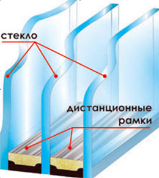
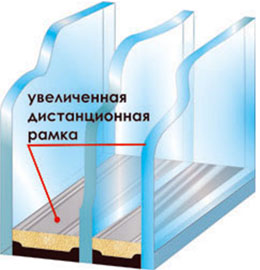
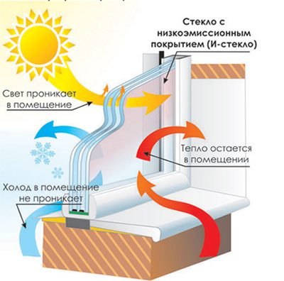
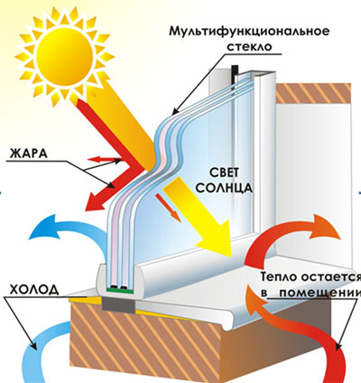
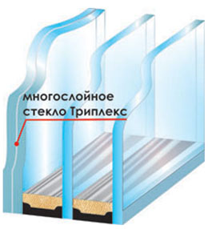

Деревянные стеклопакеты...
Стеклопакет - один из важнейших элементов, использующийся при производстве как деревянных, так и алюминиевых окон, а также витражных конструкций и зимних садов. От вида используемого при строительстве стеклопакета зависят такие характеристики остекления как теплопроводность, освещенность, шумоизоляция и даже степень защищенности помещения от солнечных лучей.
Стеклопакеты состоят из нескольких стекол, разделенных так называемыми дистанционными рамками, то есть воздушными камерами, ширина которых от десяти миллиметров и более. В зависимости от количества этих камер стеклопакеты бывают одно или многокамерными.

Дистанционные рамки содержат различные влаговпитывающие вещества, предохраняющие стекла от запотевания.
Помещения, которые необходимо максимально экранировать от внешнего шумового воздействия чаще всего остекляют используя шумозащитные стеклопакеты. При производстве этого вида стеклопакетов используется белее толстое, шестимиллиметровое стекло, а увеличенная ширина камер позволяет стеклопакету поглощать внешние шумы. Иногда для достижения лучшей шумозащитности, при производстве одного стеклопакета используют разные виды стекла и увеличивают ширину не всех, а только одной рамки.

Шумозащитные стеклопакеты имеет смысл устанавливать на окна, выходящие на многолюдные улицы или транспортные магистрали.
При заполнении внутренних камер стеклопакета газом аргоном, а также использовании специального низкоэмиссионого покрытия, отражающего тепло внутрь помещения, стеклопакет приобретает энергосберегающие свойства.
Это позволяет значительно понизить теплопроводность стеклопакета, а, следовательно, максимально сохранить тепло внутри помещения
Наружное покрытие стекол, отражающее лучи ультрафиолетового спектра и создающее эффект зеркальности, делает стеклопакет солнцезащитным, что бывает немаловажным, при остеклении солнечной стороны сооружений.
Если же на стекло наносится несколько слоев покрытия, стеклопакет становится мультифункциональным, что позволяет остеклению в летний период защищать помещение от солнечных лучей и жары, а в зимний отражать обратно в комнату энергию обогревателей, сохраняя тепло помещения.
Мультифункциональные стеклопакеты очень востребованы, особенно в нашем климате, где лето бывает жарким и солнечным, а среднедневная температура в зимний период опускается ниже 20 градусов мороза.
Безопасность стеклопакета зависит от материала, из которого изготовлено стекло, наиболее безопасные стеклопакеты изготавливают из закаленного стекла и триплекса.
При изготовлении триплекса между слоями стекла помещается тонкий слой полимера, не позволяющий стеклу при повреждении распадаться на осколки. При повреждении триплекс покрывается сетью мельчайших трещин и для дальнейшего использования непригоден, но опасности для потребителя не представляет.
Высокая прочность закаленного стекла достигается дополнительной термической обработкой, которая позволяет ему при повреждении раскалываться на множество мелких осколков, которые за неимением режущих граней не представляют опасности для человека и животных.
Компания «Окна Формат» при изготовлении деревянных и алюминиевых оконных конструкций, использует двухкамерные стеклопакеты толщиной 42мм с увеличенной толщиной одной из двух дистанционных рамок (4М1 х 14 х 4М1 х 16 х 4М1), а также двухконтурный уплотнитель «DEVENTER» производства Германии. Достигаемый уровень звукоизоляции до 35дБ, теплозащитные характеристики не менее 0,57м2с/Вт.